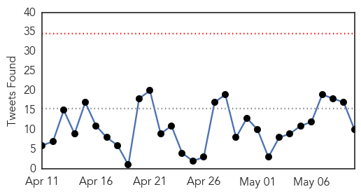
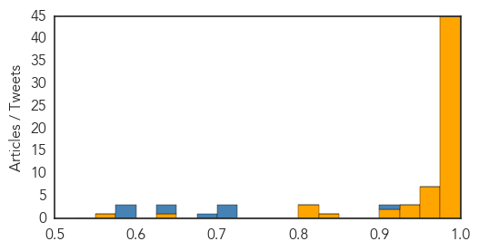

Cholera
30-Day Web Trend
0 alerts, 1 warnings

30-Day Twitter Trend
1 alerts, 0 warnings

Article Locations


Article Confidences

Top Articles:
Top Tweets:
-
No tweets found for May 10, 2015
Ebola
30-Day Web Trend
0 alerts, 0 warnings

30-Day Twitter Trend
0 alerts, 0 warnings

Article Locations
Article Confidences
Top Articles:
- 1.000
- In Liberia, Ebola outbreak is declared officially over
- 1.000
- Ebola – How this worst epidemic in recent times has left several thousand people dead over the last couple of years?
- 1.000
- Liberia Stamps Out Ebola, Vigilance Still Needed, Experts say
- 1.000
- Liberia declared free of Ebola, but authorities remain cautious
- 1.000
- Kenya : Liberia declared Ebola-free, but outbreak continues over border
- 1.000
- Liberia Is Ebola-Free -
- 1.000
- Liberia declared Ebola-free, but outbreak continues over border
- 1.000
- WHO declares Liberia to be free of Ebola
- 1.000
- Liberia declared Ebola-free, but outbreak continues over border
- 1.000
- Ebola spread continues to slow; Africa death toll surpasses 11,000
- 1.000
- Liberia declared Ebola-free, but outbreak continues over border
- 1.000
- Liberia declared Ebola-free, but outbreak continues over border By Reuters
- 1.000
- World Health Organization: Ebola Outbreak in Liberia Is Over
- 1.000
- WHO Declares Liberia Free of the Ebola Virus Disease;Program of Celebration and Thanksgiving Scheduled for Monday, May 11, 2015
- 1.000
- Liberia declared free of Ebola, but authorities remain cautious
- 1.000
- After 4,700 Dead, Liberia Now Declared Ebola-Free; 'Pain and Grief Will Take a Generation to Heal,' Says President Sirleaf
- 1.000
- WHO declares Liberia free of Ebola transmission
- 1.000
- The Chosun Ilbo (English Edition): Daily News from Korea
- 0.999
- Oxford Medical School Gazette
- 0.999
- UN warns the world to be prepared for upcoming global Ebola outbreaks
- 0.999
- Liberia Declared Free of Ebola Virus by World Health Organization
- 0.999
- Free From Nightmare: Liberia Celebrates End to Ebola
- 0.999
- West Africa battles mystery blinding 'post-Ebola syndrome' – graphic images
- 0.999
- Ebola nightmare: virus found in doctor's eye months after it leaves his blood!
- 0.999
- WHO Declares Liberian Ebola Outbreak Over
- 0.999
- Liberia is Ebola Free: WHO
- 0.999
- WHO Certifies Liberia Ebola-free
- 0.998
- Indiana doctor with Ebola heading to Georgia for treatment
- 0.998
- Liberia announced Ebola-free by WHO
- 0.998
- African Leaders to Attend Liberia's Ebola Free Declaration Ceremony
- 0.997
- Ebola-Free, but Not Resilient
- 0.997
- No More Ebola cases in Liberia: WHO
- 0.997
- WHO declares Liberia Ebola-free
- 0.996
- Ebola may persist in survivors' eyeballs for months
- 0.995
- African Leaders to Attend Liberia's Ebola Free Declaration Ceremony
- 0.994
- Liberia is free of Ebola, says World Health Organization
- 0.993
- Liberia declared Ebola-free after weeks of no cases
- 0.991
- Ebola declared dead in Liberia
- 0.989
- All Clear: Liberia Ends 42-day Incubation with Zero Ebola Cases
- 0.987
- Ebola’s silver lining: Guineans learn to have faith in hospitals - Guinea
- 0.984
- Y's Men hear about coping with the Ebola crisis
- 0.982
- Ebola survivor, Hoosier native speaks at IU School of Medicine commencement
- 0.981
- German measles is 'offensive' to the Germans warns WHO
- 0.980
- Ebola crisis forced health practitioners to think about global health security
- 0.975
- Ebola – Medical practitioners are induced to think about healthy security
- 0.972
- Sudan Vision Daily
- 0.965
- UNICEF hails Liberia’s victory over Ebola, but warns against complacency as cases remain in neighbouring countries - Liberia
- 0.962
- Liberia did it! Victory as country declared Ebola-free — story of the nightmare, and triumph
- 0.957
- Africa: Statement on the World Health Organization's Announcement on Liberia
- 0.957
- Indianapolis native tests positive for Ebola in Africa
Showing top 50 articles...
Top Tweets:
- 0.901
- The major impacts of Ebola virus outbreak on 'global health security' and WHO ... - Benchmark Reporter http://t.co/NpzVSkg9Nk ebola EVD
- 0.724
- American doctor declared free of Ebola finds the virus in his eye months later - FOX31 Denver http://t.co/HPYIBP4mvx ebola EVD
- 0.718
- WHO declares Liberia free of Ebola transmission - NBC2 News http://t.co/28KYuGcvzI ebola EVD
- 0.710
- After Ebola Outbreak Liberian Churches Confront Crisis of Faith - New York Times http://t.co/BXxQoH3kXd ebola EVD
- 0.690
- Ebola: timeline of a ruthless killer - Medical Xpress http://t.co/dnQU6MiU7s ebola EVD
- 0.637
- Liberia Conquers Ebola but Faces a Crisis of Faith - New York Times http://t.co/ovZO7jSJcY ebola EVD
- 0.635
- Ebola crisis – Health practitioners forced to think about healthy security on ... - Times Gazette http://t.co/8frbwBXsOV ebola EVD
- 0.598
- Liberia Churches Celebrate End of Ebola - ABC News http://t.co/xR7XAGsCDX ebola EVD
- 0.598
- Liberia Churches Celebrate End of Ebola - ABC News http://t.co/Bbsb79eSMI ebola EVD
- 0.580
- Impact of Ebola crisis on the security of global health? - Dispatch Times http://t.co/vHbCtjq8dy ebola EVD